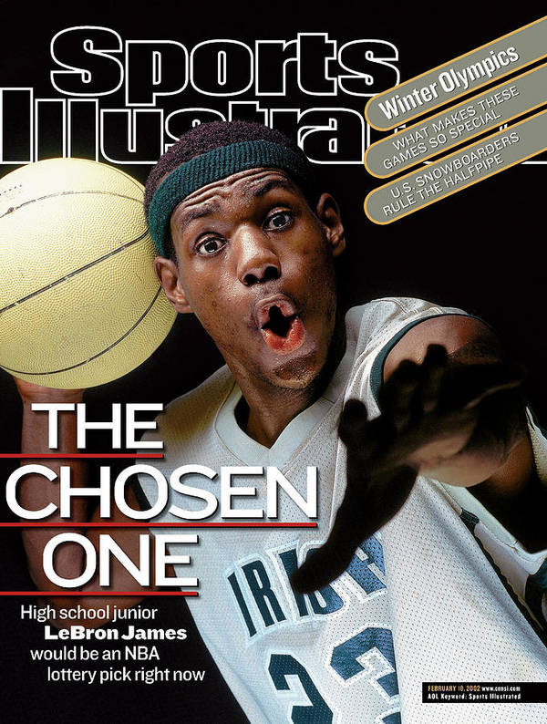

By: Joseph Fallait, Yakob Kebede, Sonam Sherpa, Manogya Acharya
In the last 10 years, there have been 7 distinct NBA Most Valuable Players - Lebron James has won 3 of them.
Of the last 10 NBA seasons, LeBron has made it to the Finals 9 times.
LeBron James was born in Akron, Ohio, the most dangerous city in Ohio and seventh most dangerous city nationwide, in 1984. (Stebbins, 2020) LeBron’s performance as a high schooler was enough to make him the cover athlete of Sports Illustrated before even graduating. He went on to be the first-picked athlete in the 2003 NBA Draft by the Cleveland Cavaliers, his home team, straight out of high school.
Questions
What makes Lebron James so different?
How has his playstyle changed?
How can we compare overall impact by a player?

Lebron James was the top prospect heading into the NBA Draft in 2003. Despite the fact that he was entering the league straight out of high school at the age of 19, the hype around Lebron James was immense. Sports Illustrated labelled Lebron James as “The Chosen One” before he had even played a game in the NBA. This was quite the feat considering that this was a very talented draft class. He would go on to join two of them (Chris Bosh and Dwayne Wade) later in his career. The Cleveland Cavaliers were coming off of the worst record in the Eastern Conference and were expecting a lot from the rookie. In his first year, Lebron James carried his team from being 15th in the Eastern Conference to 9th place in the Eastern Conference. In fact, they only missed the playoffs by one game. This was a remarkable feat, but this was only the beginning of one of the greatest careers of all time.
Lebron James averaged 21 points, 5.5 rebounds, and 5.9 assists per 36 minutes played. Lebron James also led the team in points. He was fulfilling his role as a Small Forward, and the reason he didn’t lead the team in the combination of points, rebounds, and assists was because it wasn’t his role to get rebounds. The graph above is sorted by age in ascending order and displays the level of game that Lebron brought to the Cavaliers immediately after he was drafted into the league.
Throughout his first stint with the Cleveland Cavaliers, he improved his game and became one of the best players in the league. In 2007, he carried the Cavs all the way to the NBA Finals. Although they lost in the finals, his leadership to take that team to the Finals was applauded. In 2009, he won his first Most Valuable Player award.
The graph to the left displays how his plus/minus increased as he developed into an even better player. The plus/minus stat is the difference between the number of points your team scores and the number of points your team allows while you are on the court. The plus/minus stat is an essential stat because it displays a player’s performance on both the offensive and defensive side of the court.
On July 8th 2010, LeBron James announced on live TV that he will be moving away from Cleveland Cavaliers to join the Miami Heat. His decision was heavily influenced by the hunger and desire to win championships by joining forces with Dwyane Wade and Chris Bosh. During this time the Miami Heat went on to the NBA Finals four years in a row whilst winning two out of the four.
During these times LeBron James kept on climbing into new heights and improved his game even though so many thought he had reached his peak prime years. He won two more Most Valuable Player awards. And like stated above he won back to back NBA titles; his first and his second championship facing the Oklahoma City Thunder and the San Antonio Spurs. In addition he led the Miami Heat in points and also assists.
From these +/- stats, it looks like LeBron's game might have declined, but this was the beginning of the golden era for LeBron. As previously mentioned, LeBron made it to the finals all four years and won two. The reason why his plus/minus is lower is because he was surrounded by players of the highest level in D. Wade and Chris Bosh so his responsibility wasn't as high.
By the end of his time in Miami, LeBron had won the MVP trophy four times. He won the MVP award in 2009, 2010, 2012, and 2013. He averaged over 28 points in each of the four years. By this time in his career, it was obvious that not only was he the best player in the league, he was one of the greatest players to ever step on a court. This level of dominance continued as he went back to Cleveland in front of his home fans. Cleveland Cavaliers had never won a championship up to this point, so the city was axiously awaiting the return of LeBron James.
The Return to Cleveland
After Miami lost during the 2014 NBA Finals against the San Antonio Spurs LeBron left Miami to go back to his previous team and his hometown team Cleveland Cavaliers. His mission during this time was to crown Cleveland as NBA Champions. In his first year back in Cleveland he was able to team up with Kyrie Irving and also Kevin Love. They managed to go to the NBA Finals during their first season, however, they weren’t able to crown themselves nor Cleveland. That is until their second year which they won against the Golden State Warriors, who beat them the year before, after coming back from a 3 - 1 deficit in the NBA Finals. Finally he was able to deliver on what he said he would, and they were crowned as 2016 NBA Champions. During this year in the NBA Finals he was able to record 29.7 points, 11.3 rebounds & 8.9 assist and once again he became the Finals MVP. During this series he led his team in all categories that is points, rebounds, assist, steals & blocks. However, even though they managed to go back to the NBA Finals the two years after they weren’t able to capitalize on them.
The Block
This exploration is very focused on Lebron’s statistics, but we can’t measure the intangibles. Not every block is created equal, and though Lebron’s steals + blocks per 36 weren’t high, he’s always ready to perform when the game is on the line. A block is a block, but “Leblock” was the block that won Cleveland their first ever championship.
From these +/- stats, it looks like LeBron's game might have declined, but in fact this was the beginning of the golden era for LeBron. As previously mentioned, LeBron made it to the finals all four years and won two. The reason why his plus/minus is lower is because he was surrounded by players of the highest level in D. Wade and Chris Bosh so his responsibility wasn't as high.
Although it looks like LeBron's dominance on the court decreased slightly throughout his career, it hasn't. His responsibilities on the teams changed as the players around him changed, but his level of dominance continued. LeBron has been in the finals 9 times in the last 10 years. It also should be mentioned that the average +/- stat is about 0, so the fact that LeBron's +/- was +11 at one point in Cleveland originally is more evidence to the uniquess of LeBron's dominance.
Longevity
Another thing that is extraordinary when it comes to LeBron James is how much of the time he is on the court each game he has played and also how much of total games he has played. He has been and still is in his 17 Years playing, maintaining and still improving in different areas of his game with almost zero signs of slowing down. He has played at least 2000 minutes in each season. What is remarkable is that he just finished second in the MVP voting of the 2020 NBA season where it is argued that he should have been the MVP of the season. The interactive graph above shows the age of each of the MVP's of the past decade and the size of the circle shows the number of minutes played by that player. If you press the forward arrow, it plays from 2004-2020 and reveals how LeBron was able to maintain his body to play every season to his best ability.
LeBron has evolved as a player as he gets older to ensure that he is still competing at the higest level. His ability to pass the ball has been incredible. The graph above shows he has increased in the percentage of assists provided. His ability as a playmaker makes the team around him better, allowing them to continue to dominate the league. It is also evident from the graph that he drives less towards the hoop and settles for more shots. This reduces the strain on his body, allowing him to be able to play for a long time and increasing his already lengthy career. What’s most remarkable about Lebron James is the fact that he’s been suiting up to play ever since he was 19, averaging about 3000 minutes a season, and competing with people almost half his age. There may come a day that Lebron competes for the MVP title against his own son, Bronny James Jr., who is already making his name at age 16. They would be the first father-son duo to ever play in the NBA at the same time. Right now, he is in the Finals once more and is one win away from another championship.